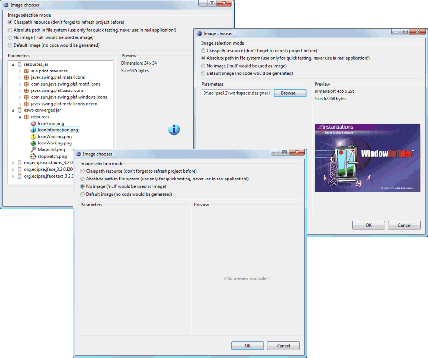

Click the
 button
to access the Image Chooser and select an icon or image.
button
to access the Image Chooser and select an icon or image.
The Image Chooser has options for selecting images defined in the Classpath or at an Absolute path in the file system. Options are also provided to set the image to null or remove any generated image. A preview of the selected image is shown on the right.
